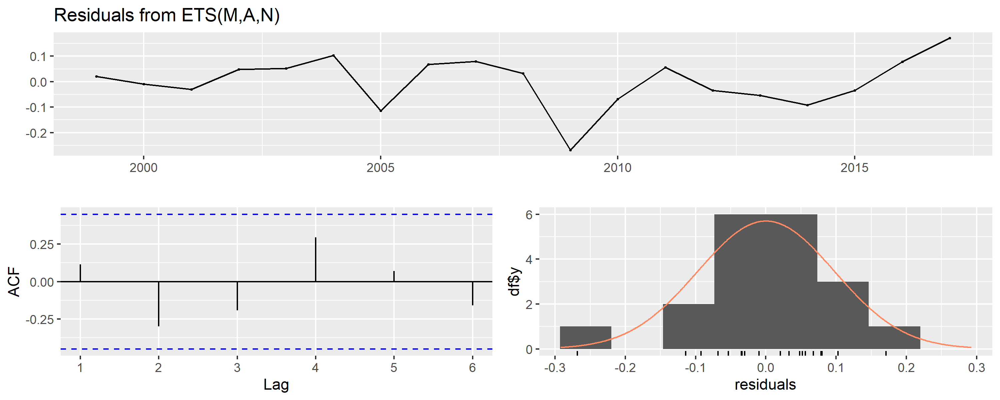
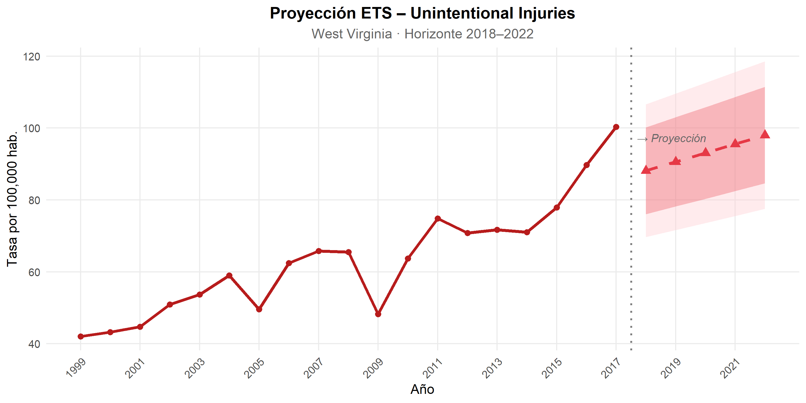

12 13. Modelo 2 – ETS (Error, Trend, Seasonality)
El modelo ETS generaliza la familia de métodos de suavizamiento exponencial dentro de un marco probabilístico formal. A diferencia de los métodos clásicos, ETS especifica explícitamente una función de verosimilitud, lo que permite la selección automática del tipo de error (Aditivo/Multiplicativo), tendencia (None/Additive/Additive damped) y estacionalidad (None/Additive/Multiplicative) mediante criterio AICc. Esta propiedad lo convierte en un competidor directo de ARIMA para series univariadas de corto alcance (Hyndman & Khandakar, 2008).
En series integradas I(1) con tendencia positiva sostenida como es el
caso de Unintentional injuries, ets() típicamente selecciona una
especificación ETS(A,A,N) o ETS(M,A,N): error aditivo o
multiplicativo, tendencia aditiva, sin componente estacional dado que la
serie es anual.
library(forecast)
library(tseries)
library(kableExtra)
library(ggplot2)
library(scales)
# Ajuste – selección por AICc
modelo_ets <- ets(ts_wv_acc)
# Resumen del modelo seleccionado
cat("=== Modelo ETS seleccionado ===\n")## === Modelo ETS seleccionado ===## Especificación: ETS(M,A,N)## AIC: 133.22## AICc: 137.84## BIC: 137.95## === Parámetros de suavizamiento ===## alpha beta l b
## 0.0001 0.0001 38.6801 2.4719##
## === Métricas de ajuste en muestra ===## ME RMSE MAE MPE MAPE MASE ACF1
## Training set 0.0158 6.5703 4.9747 -0.9952 7.837 0.7358 0.172La selección automática por AICc identifica ETS(M,A,N): error multiplicativo, tendencia aditiva y sin componente estacional. Los parámetros de suavizamiento alpha = 0.0001 y beta = 0.0001 indican que el modelo asigna muy poco peso a las observaciones recientes, priorizando la estructura de nivel y tendencia iniciales (l = 38.68, b = 2.47). Con 4 parámetros estimados obtiene AIC = 133.22 y AICc = 137.84, con un RMSE en muestra de 6.57 y MAPE de 7.84%. Aunque el ajuste es adecuado, la penalización por complejidad del AICc ya anticipa su posición frente a ARIMA, que logra un resultado superior con un único parámetro.
12.1 13.1. Diagnóstico de residuos – ETS
par(mfrow = c(1, 2), bg = "#FAFAFA")
checkresiduals(modelo_ets,
plot = TRUE,
main = "Residuos – ETS (Unintentional Injuries WV)")
##
## Ljung-Box test
##
## data: Residuals from ETS(M,A,N)
## Q* = 5.6615, df = 4, p-value = 0.2259
##
## Model df: 0. Total lags used: 4Los residuos del modelo ETS deben comportarse como ruido blanco para que el modelo sea válido. Un p-value > 0.05 en la prueba de Ljung-Box confirma independencia serial.
12.2 13.2. Proyección ETS (2018–2022)
horizonte <- 5
pred_ets <- forecast(modelo_ets, h = horizonte, level = c(80, 95))
anios_hist <- 1999:2017
anios_fut <- 2018:2022
df_hist_ets <- data.frame(year = anios_hist, valor = serie_wv_acc)
df_fut_ets <- data.frame(
year = anios_fut,
valor = as.numeric(pred_ets$mean),
lo80 = as.numeric(pred_ets$lower[, 1]),
hi80 = as.numeric(pred_ets$upper[, 1]),
lo95 = as.numeric(pred_ets$lower[, 2]),
hi95 = as.numeric(pred_ets$upper[, 2])
)
ggplot() +
geom_ribbon(data = df_fut_ets,
aes(x = year, ymin = lo95, ymax = hi95),
fill = "#FFCDD2", alpha = 0.40) +
geom_ribbon(data = df_fut_ets,
aes(x = year, ymin = lo80, ymax = hi80),
fill = "#E63946", alpha = 0.30) +
geom_line(data = df_hist_ets,
aes(x = year, y = valor),
color = "#B71C1C", linewidth = 1.3) +
geom_point(data = df_hist_ets,
aes(x = year, y = valor),
color = "#B71C1C", size = 2) +
geom_line(data = df_fut_ets,
aes(x = year, y = valor),
color = "#E63946", linewidth = 1.3, linetype = "dashed") +
geom_point(data = df_fut_ets,
aes(x = year, y = valor),
color = "#E63946", size = 3, shape = 17) +
geom_vline(xintercept = 2017.5, linetype = "dotted",
color = "gray50", linewidth = 0.8) +
annotate("text", x = 2017.7, y = max(serie_wv_acc) * 0.97,
label = "→ Proyección", hjust = 0,
color = "gray40", fontface = "italic", size = 3.5) +
scale_x_continuous(breaks = seq(1999, 2022, by = 2)) +
scale_y_continuous(labels = comma) +
labs(
title = "Proyección ETS – Unintentional Injuries",
subtitle = "West Virginia · Horizonte 2018–2022",
x = "Año", y = "Tasa por 100,000 hab."
) +
theme_minimal(base_size = 12) +
theme(
plot.title = element_text(face = "bold", hjust = 0.5),
plot.subtitle = element_text(hjust = 0.5, color = "gray40"),
axis.text.x = element_text(angle = 45, hjust = 1),
panel.grid.minor = element_blank()
)
12.3 13.3. Tabla de valores proyectados
data.frame(
`Año` = 2018:2022,
`Predicción` = round(as.numeric(pred_ets$mean), 1),
`IC 80% inf.` = round(as.numeric(pred_ets$lower[, 1]), 1),
`IC 80% sup.` = round(as.numeric(pred_ets$upper[, 1]), 1),
`IC 95% inf.` = round(as.numeric(pred_ets$lower[, 2]), 1),
`IC 95% sup.` = round(as.numeric(pred_ets$upper[, 2]), 1),
check.names = FALSE
) %>%
kable(
caption = "Valores proyectados ETS – Unintentional Injuries WV (2018–2022)",
align = rep("c", 6)
) %>%
kable_styling(bootstrap_options = c("striped", "hover"),
full_width = TRUE, font_size = 11) %>%
row_spec(0, background = "#B71C1C", color = "white", bold = TRUE)| Año | Predicción | IC 80% inf. | IC 80% sup. | IC 95% inf. | IC 95% sup. |
|---|---|---|---|---|---|
| 2018 | 88.1 | 76.1 | 100.2 | 69.7 | 106.6 |
| 2019 | 90.6 | 78.2 | 103.0 | 71.6 | 109.5 |
| 2020 | 93.1 | 80.3 | 105.8 | 73.6 | 112.5 |
| 2021 | 95.5 | 82.5 | 108.6 | 75.5 | 115.5 |
| 2022 | 98.0 | 84.6 | 111.4 | 77.5 | 118.5 |
ETS proyecta un crecimiento sostenido desde 88.1 en 2018 hasta 98.0 por 100,000 habitantes en 2022, un incremento de 9.9 puntos en cinco años, coherente con la tendencia acelerada observada en el período 2014–2017. Los intervalos de confianza al 95% se amplían (69.7–106.6 en 2018 vs. 77.5–118.5 en 2022), reflejo de la incertidumbre acumulada en series cortas con tendencia fuerte. La especificación multiplicativa ETS(M,A,N) asigna mayor peso a los valores recientes, lo que explica que sus proyecciones sean las más elevadas entre todos los modelos evaluados.